<mat-toolbar color="primary" class="expanded-toolbar">
  <button mat-button disabled>
    
    <span class="header-title">{{currentTitle}}</span>
  </button>
    <button mat-button [mat-menu-trigger-for]="menu" fxHide="false" fxHide.gt-sm>
      <mat-icon>more_vert</mat-icon>
    </button>
  </mat-toolbar>
  <mat-menu x-position="before" #menu="matMenu">
    <button mat-menu-item routerLink="/admin">
      <mat-icon>stacked_bar_chart</mat-icon>
      Stats
    </button>
  </mat-menu>

  
  <mat-card class="qrCard">
    <div class="interior">
      <mat-card-content>
          <div class="truncate">
            <span style="font-size: 20px;font-weight: 100;">Enter a long URL to make a TinyURL</span> 
          </div>
      </mat-card-content>
      
      <p>
        <mat-form-field appearance="outline" style="width: 300px;">
          <mat-label>Url</mat-label>
          <input type="url" matInput [formControl]="longUrl" placeholder="http://">
          <mat-error *ngIf="longUrl.invalid">{{getErrorMessage()}}</mat-error>
        </mat-form-field>
      </p>
  
      <mat-card-content>
          <div class="truncate">
            <mat-icon>brush</mat-icon>
              <span class="title">Customize your link</span> 
          </div>
      </mat-card-content>
      <p>
        <mat-form-field appearance="outline" style="width: 300px;">
          <input #url [(ngModel)]="result" matInput class="disabledDiv">
          <mat-icon matSuffix (click)="copy(url)">content_copy</mat-icon>
        </mat-form-field>
      </p>
        
      <div class="example-button-row">
        <button mat-raised-button color="primary" [class.spinner]="showLoader" [disabled]="showLoader"  style="width: 100%;" (click)="postUlr()">Make TinyURL!</button>
      </div>
    </div>
  </mat-card>